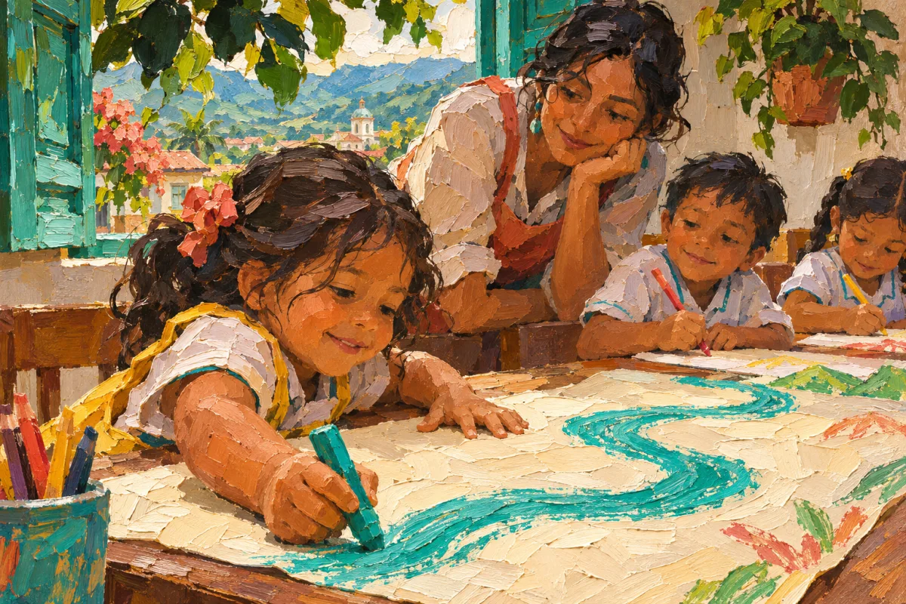
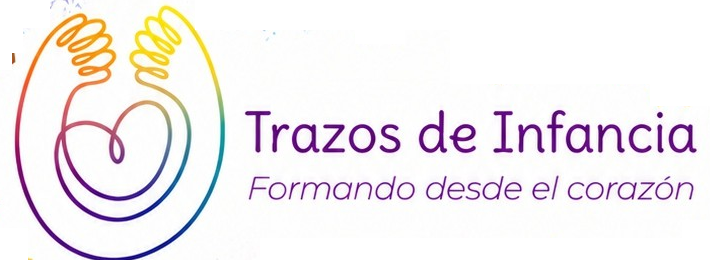
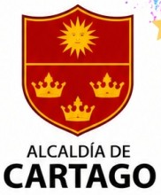
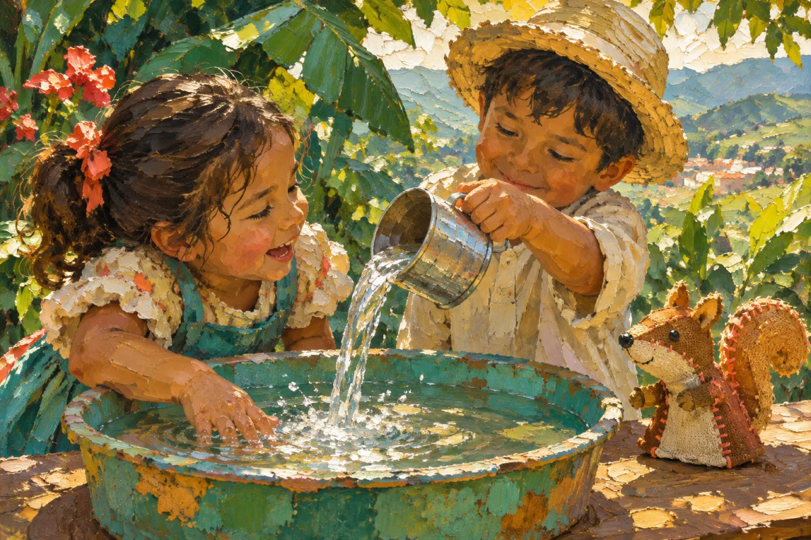
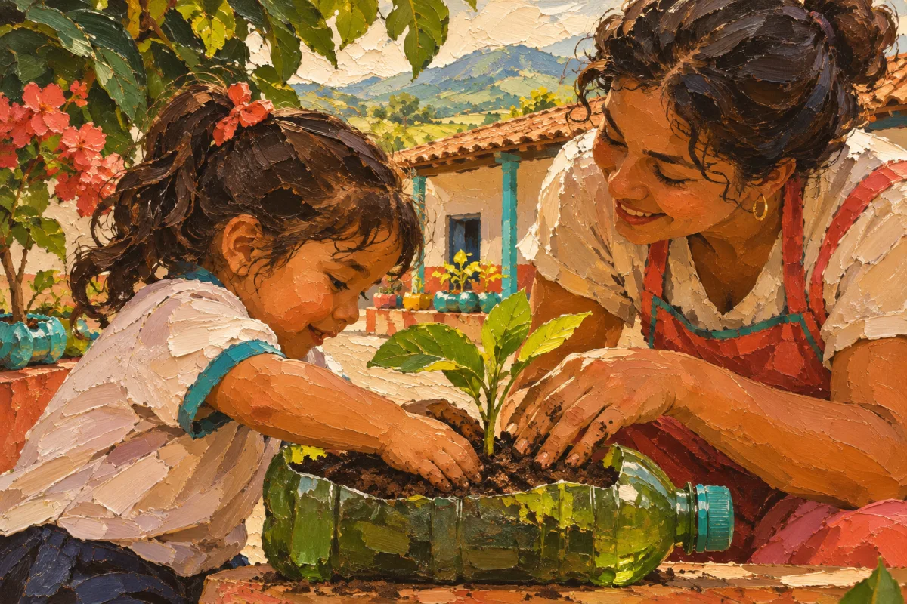
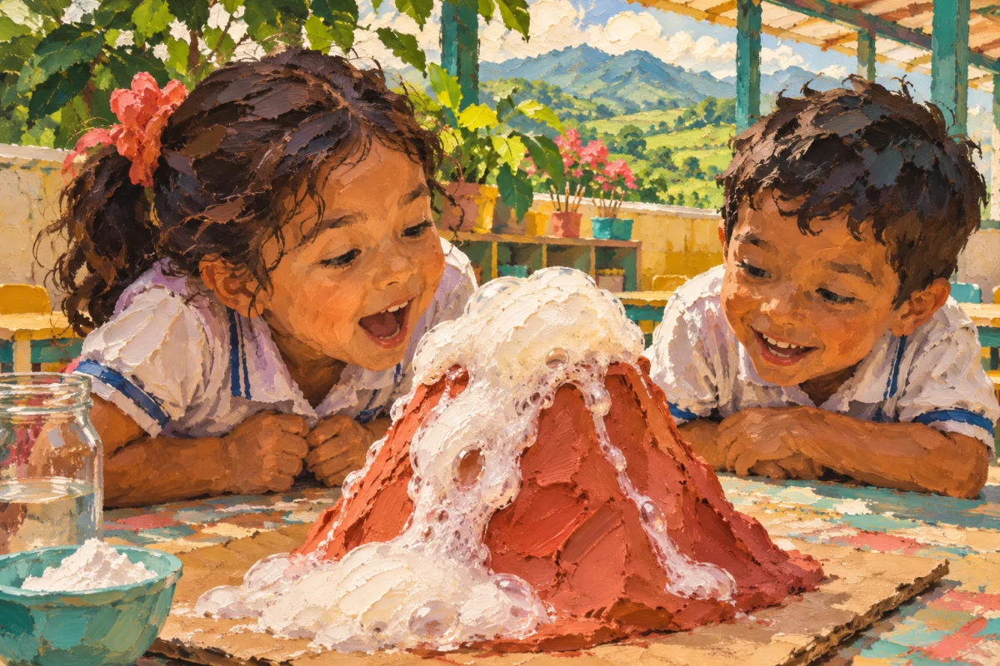
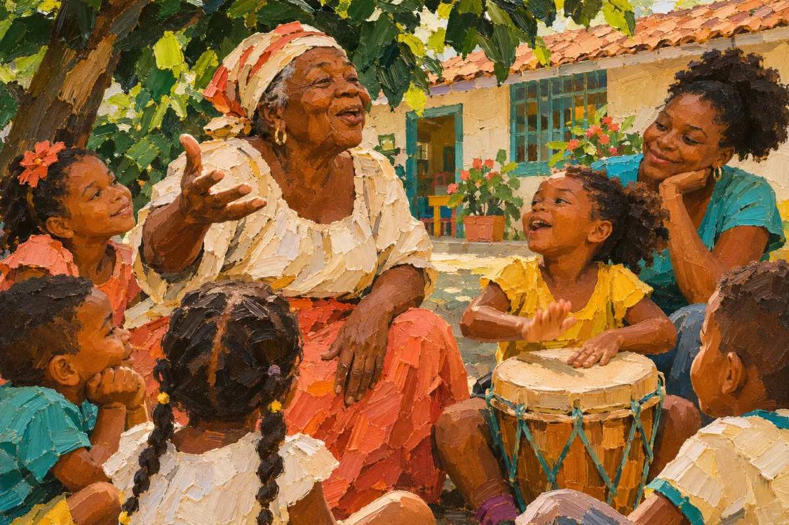
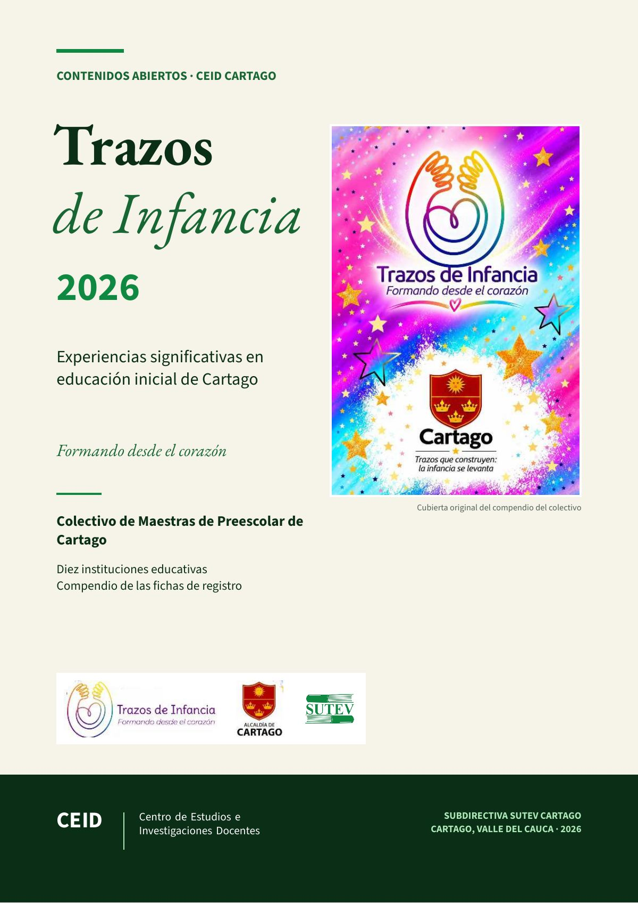

Trazos de Infancia 2026
Experiencias significativas en educación inicial de Cartago
Colectivo de Maestras de Preescolar de Cartago
Formando desde el corazón


Subdirectiva SUTEV Cartago
Diez instituciones educativas de Cartago cuentan, en la voz de sus maestras, cómo trabajan con los niños y las niñas de Jardín y Transición. El compendio del colectivo «Trazos de Infancia», en acceso abierto.
- 10experiencias significativas
- 10instituciones educativas de Cartago
- 33maestras expositoras, con su correo de contacto
Las diez experiencias

Experiencia 02Ardillitas en acción: ágiles para explorar, curiosas para aprenderInstitución Educativa María Auxiliadora
Experiencia 03Sembrando vida, cosechando aprendizajesInstitución Educativa Alfonso López Pumarejo
Experiencia 04ITI CientíficosInstitución Educativa Instituto Técnico Industrial Indalecio PenillaExperiencia 05Gabo se viste de MundialInstitución Educativa GaboExperiencia 06Agencia de Viaje Infantil – Exploradores del Río La ViejaEscuela Normal Superior Regional Ciudad Cartago (ENSRCC)Experiencia 07Entre animales, semillas, aventuras y sonrisasInstitución Educativa ZaragozaExperiencia 08Huellas en la Cancha: El Mundialito de Jardín, Transición y Primaria como Escenario de Emociones, Juego y Comunidad AcadémicaInstitución Educativa AcadémicoExperiencia 09English Is FunInstitución Educativa Manuel Quintero Penilla
Experiencia 10Raíces, cultura y diversidad: un viaje a la afrocolombianidadInstitución Educativa Ramón Martínez Benítez
«Trazos de Infancia» es el Colectivo de Maestras de Preescolar de Cartago, y su lema es «Formando desde el corazón». En 2026 reunió en un compendio las experiencias significativas en educación inicial de diez instituciones educativas del municipio, cada una con su ficha de registro, sus fotografías y sus afiches.
El CEID Cartago lo publica aquí en acceso abierto, con una página para cada experiencia, para que otras maestras y otros maestros puedan leerlas, citarlas y escribirles a sus autoras.
Los textos son de las maestras
Cada experiencia se transcribió de la ficha de registro de su institución y se cotejó con el original. Solo se corrigieron tildes, erratas de digitación, espacios y comillas. No se reescribió, no se resumió y no se completó nada.
Qué cambia frente al compendio original
- El diseño: el compendio era un documento de 127 páginas con el fondo de colores del colectivo; aquí va en el formato de las publicaciones del CEID, con la cubierta original en la cubierta.
- La ficha: sus rótulos («Problema o necesidad», «Objetivo(s)», «Metodología», «Innovación», «Seguimiento y valoración» y «Resultados») son los títulos de cada sección. No se imprimen las preguntas guía del formulario ni las casillas vacías.
- Los datos personales: de cada maestra se conservan el nombre y el correo, como medio de contacto. Se omitieron los documentos de identidad y los teléfonos.
- Las imágenes: las fotografías y los afiches de cada institución son los del original y van al final de su experiencia.
Lo que falta en el original
Las experiencias de la Institución Educativa Antonio Holguín Garcés y de la Institución Educativa Gabo llegaron al compendio sin la ficha de identificación (por eso no figuran sus maestras) y su texto empieza después del comienzo. Así se publican, con una nota al inicio de cada una.
Créditos y cuidado
Colectivo autor
Presente en las portadillas originales
Aliado del colectivo
Edición del CEID Cartago
Lemas del colectivo: «Formando desde el corazón» y «Trazos que construyen: la infancia se levanta».
Las once ilustraciones de esta edición web se crearon con inteligencia artificial a partir de los temas de las experiencias.
El compendio original lleva el logo de la Alcaldía de Cartago junto al del colectivo e incluye una sección del Instituto Técnico Colombiano (INTEC), aliado del colectivo. Los escudos, las fotografías y los afiches pertenecen a las instituciones y se reproducen como parte del compendio.
Las fotografías de niños y niñas son las que las instituciones incluyeron en el compendio. Si una familia o una maestra pide retirar una imagen o un dato, el CEID lo retira.